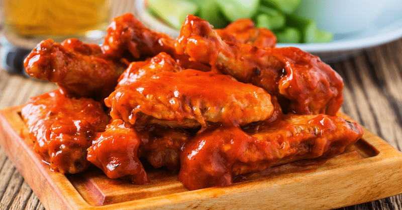

Simple Buffalo Wings

Simple Buffalo Wings
These delicious, minimalist buffalo wings are perfect to lose your fantasy football game to. Done in 20 minutes with almost no ingredients, these are perfect since you've spent all morning changing your lineup.
Ingredients
- 1 pack of Butcher Box chicken wings
- Franks Red Hot
- 2 Tbsp of butter
- Salt, pepper, baking powder, garlic powder, and onion powder.
Steps
- Pat your wings dry with a paper towel, get them as dry as you can, dry like a desert.
- In a small bowl add your dry spices to taste, it doesnt take much baking powder about a teaspoon.
- Coat the wings in the dry spices, you can toss them or sprinkle it on, it doesnt matter, your going to lose fantasy either way.
- Arrange your coated wings in the airfryer at 400 degrees for 20 minutes, you're gonna want to flip those bad boys once halfway through.
- As the wings finish, put the butter in a large bowl and melt it in the microwave like your playoff chances.
- Add the cooked wings to the large bowl, add the Franks to taste, the heat will help with the pain from your QB getting benched for the 4 interceptions, toss vigoursly and eat. Do it all again next sunday.